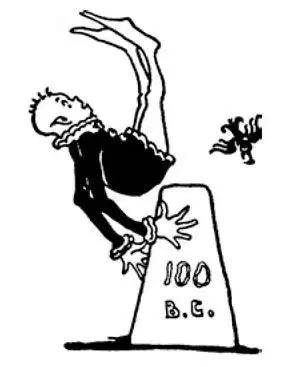

THE Carthaginians were not beaten for good. They were only waiting for another chance to get even. As, however, they had been unsuccessful in attacking Italy from in front as they had been doing, they made up their minds to attack from the back. Their scheme was to go the long way round through Spain and down into Italy from the north.
In order to do this, first of all they had to conquer Spain so that they could get through. They did this, however, rather easily, for the Carthaginians had a very great general named Hannibal. Then came the great difficulty, to get into Italy by this back way.
Across the top of the boot , at the north of Italy, there are the great mountains called the Alps. They are miles high and covered even in summer with ice and snow. There are crags and steep cliffs along which anyone passing who made a single misstep would be dashed to death thousands of feet below.
It was the Alps, therefore, that formed a bigger and better wall than any city or country could possibly build. Of course the Romans thought it impossible for any army to climb over such a terribly high and dangerous wall.
Time and again there have been things that people call impossible to do, and then someone has come along and done them.
People said it was impossible to fly.
Then someone did it.
People said it was impossible to cross the Alps with an army.
Then Hannibal came along, and before the Romans knew what had happened, he had done it. He had crossed the Alps with his army and was in at the back door! Hannibal brought with him elephants from Africa. These were the tanks of ancient warfare and were highly valued. Can you imagine the long columns of soldiers and elephants crossing those high mountains?
The Romans were unable to keep him from marching on toward their city, winning battle after battle as he came along. They were unable to prevent his marching up and down Italy, conquering other towns in Italy and doing pretty much as he pleased. It seemed as if Rome were beaten and would lose all of Italy.
Now, in some games, if you can't defend your own goal, it may be a good plan to try attacking your opponent's goal.
Romans thought they would try this plan. While Hannibal was attacking, Rome would attack Carthage while its general was away and there was no strong goalkeeper to defend that city.
The Romans sent a young man named Scipio with an army to do this.
First, however, Scipio went to Spain to cut Hannibal off from the way he had come.
Scipio then went over to Africa to attack Carthage itself.
The Carthaginians, frightened at being attacked with their general and his army far off in Italy, sent as fast as they could for Hannibal to come home. When at last he arrived, it was too late. Scipio fought a famous battle at Zama near Carthage, and the Carthaginians were beaten, beaten a second time by the Romans. Thus ended the second Punic War in 202 B.C. This is another easy name and easy date:
ZAMA— 202 B.C .
The Romans had won two wars against Carthage; you would think that they would now have been satisfied. But they weren't. They thought they had not beaten Carthage badly enough. They were afraid Carthage was not quite dead or that it might come to life. They thought there might be a little spark left that might start a fire if it weren't trampled out.
Now, it is bad sport to pummel your opponent after he is beaten, and Carthage was beaten—beaten, black and blue. Yet a few years later the Romans attacked again for the third and last time.
Carthage was unable to defend itself, and the Romans destroyed the city. Later, though, the Roman general Julius Caesar rebuilt the city. Still later, the Romans built other cities nearby, with fine roads connecting them and with great aqueducts bringing them water. Today we can visit the Roman ruins in what is now Tunisia.
迦太基人并没有一蹶不振，他们只是在等待下一次向罗马人报复。迦太基人以前打仗总是从正面进攻，但是上次从正面进攻意大利失败了，于是他们决定从背后袭击。他们的计划是绕一个大圈子，途经西班牙，再从北边向南进入意大利。
为了实行这个计划，他们首先必须征服西班牙，这样他们才能穿过这里北上。他们攻下了西班牙，不过，没有费多大劲，因为迦太基人有个非常伟大的将军叫汉尼拔。接下来他们要从背后进入意大利，却极其艰难了。
在这个“靴子”的上方，也就是意大利的北边，有宏伟的阿尔卑斯山脉。阿尔卑斯山脉高达数英里，有些山峰即使夏天也覆盖着冰雪。山上处处是悬崖和峭壁，经过这儿的人稍有不慎，就会失足落入数千英尺深的山谷，摔得粉身碎骨。
因此，正是这阿尔卑斯山脉形成了一道天然的屏障，比任何一个城市或国家所能修建的城墙都更高大、更坚固。罗马人自然会觉得任何军队都不可能翻越如此险峻的“城墙”。
曾经，一次又一次，有些事情人们认为是不可能办到的，但是有人就出来把它办成了。
人们曾说人不可能飞到空中。
接着有人就做到了。
人们说带领一支军队翻越阿尔卑斯山脉是不可能的。
然后，汉尼拔出现了，他做到了，而罗马人还蒙在鼓里。他率领着军队翻越了阿尔卑斯山，从“后门”进入了意大利！汉尼拔从非洲带来了大象。它们犹如古代战争中的“坦克”，是非常宝贵的。你能想象排成长列的士兵和大象在翻越那些高山时是怎样的情景吗？
罗马人无法阻止汉尼拔的军队朝着罗马城长驱直入，他们所向披靡，接连取胜。汉尼拔的军队深入到意大利各地，征服了罗马以外的其他城镇，他们为所欲为，而罗马人却毫无还手之力。好像眼看着罗马就要被打败，整个意大利就要失陷了。
现在有些比赛中，如果你无法守住自己的球门，尝试进攻对方的球门不失为一个好的方法。
罗马人觉得应该试一试这个以攻为守的方法。当汉尼拔进攻罗马的时候，罗马就去攻击迦太基，正当此时他们的主将出征在外，迦太基已经没有强有力的“守门员”在守城了。
罗马人派了个叫西庇阿的年轻人率领一支军队来执行此计划。
不过，西庇阿首先来到了西班牙，截断了汉尼拔按原路退回的后路。
接着，西庇阿渡海到了非洲直接进攻迦太基。
迦太基人突遭袭击，惊慌失措，因为他们的主将和大部队都远在意大利。于是，他们尽快派人通知汉尼拔回来救援。当汉尼拔最后回到迦太基时，已经太晚了。在迦太基附近的扎马，西庇阿向汉尼拔的军队展开了一场历史上著名的战役，迦太基人被打败了，这是他们第二次被罗马人打败。这样，在公元前202年，第二次“布匿战争”结束了。这次战役的名字和时间也很容易记：
扎马战役——公元前202年
罗马人两场战争都胜了迦太基。你会想他们现在可以满足了。但是他们没有。他们觉得还没有把迦太基彻底打倒，担心迦太基气息尚存，没有完全死掉，还有可能活过来。他们认为如果不把剩下的一点火星踏灭，还可能死灰复燃，酿成火灾。
现在，你的对手被打倒了，你还用拳头连续揍他，这就显得气量狭隘了，而迦 太基已经被打倒了——被打得遍体鳞伤。然而，几年后，罗马人第三次、也是最后一次攻打了迦太基。
迦太基无力防护自己，罗马人毁灭了这座城市。不过，后来罗马统帅尤利乌斯•恺撒重建了这座城市。再后来，罗马人在附近兴建了其他城市，在城市之间修建了互通的平坦的道路，并修建了宏伟的高架渠为城市引来了水。今天，我们在现在的突尼斯还能参观到这些罗马的遗迹。

公元前100年